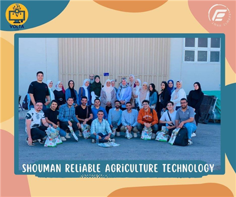
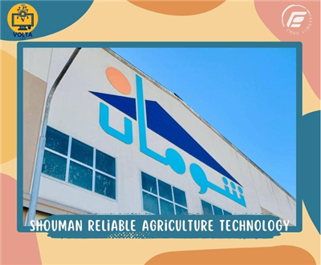
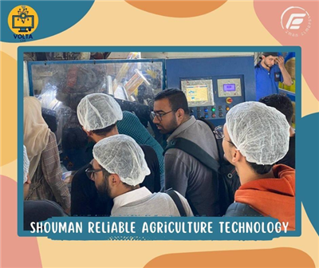
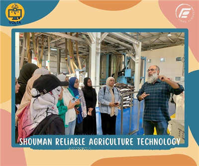
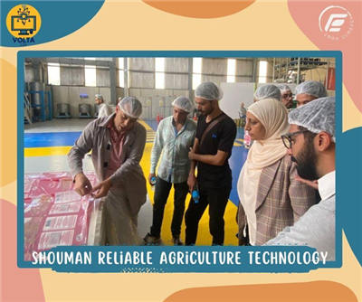
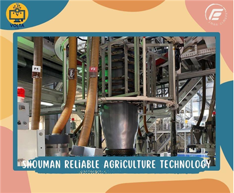
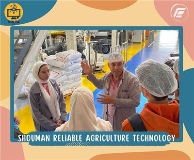
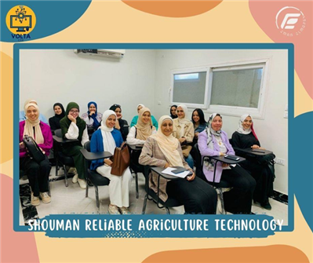
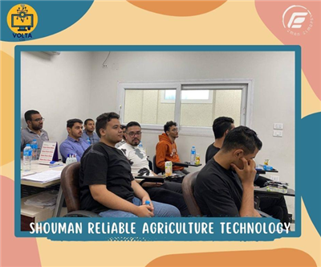

الرحلات العلمية والثقافية
الرحلات العلمية والثقافية حرصا من المعهد على توفير المعرفة والفائدة لجميع الطلاب. ينظم وينفذ المعهد لجميع الاقسام العلمية بالمعهد (قسم الهندسة المدنية ,الهندسة الكيميائية وهندسة الاتصالات والإلكترونيات) رحلات ثقافية وعلمية.
زياره ميدانيه إلي الهيئه القوميه للاستشعار عن بعد وعلوم الفضاء
نظم قسم هندسة الاتصالات والإلكترونيات بالمعهد زياره ميدانيه الي الهيئه القوميه للاستشعار عن بعد وعلوم الفضاء، وذلك في يوم الثلاثاء الموافق 29 أكتوبر 2024 بهدف تعريف الطلاب بأحدث التقنيات والتطبيقات العلميه في مجالات الاستشعار وعلوم الفضاء.
توجهت هذه الزياره إلي مقر الهيئه لتقديم تجربه تعليميه فريده للطلاب واطلاعهم علي كيفية توظيف تكنولوجيا الاستشعار عن بعد في مجالات متعدده وشملت جولات تعريفيه وعروضا توضيحيه قدمها خبراء من الهيئه لتعزيز فهم الطلاب للمجال وتوسيع آفاقهم المعرفيه.


زياره ميدانيه إلي شركة شومان بجمصه
نظم قسم هندسة الاتصالات والالكترونيات بالمعهد زياره ميدانيه إلي شركة شومان بجمصه، وذلك في يوم الاثنين الموافق 28 أكتوبر 2024، بهدف إطلاع الطلاب علي أحدث التقنيات والأساليب المستخدمه في مجال الصناعه الالكترونيه والتطبيقات الصناعيه المتقدمه.
جاءت هذه الزياره لتعزيز المعرفه العلميه لدي الطلاب، وربط المناهج الاكاديميه بالواقع الميداني في قطاع الاتصالات والإلكترونيات، ولتعريفهم بكيفية عمل الأجهزه والأنظمه المستخدمه في هذه الصناعه الحيويه. وتضمنت جولات تعريفية في مختلف أقسام الشركه، حيث اطلع الطلاب علي مراحل الإنتاج وأساليب الجوده والتحكم التقني، مما أسهم في إثراء المعرفه العلميه للطلاب وتوسيع آفاقهم المهنيه.









الزيارة العلمية لطلاب المعاهد العليا لهيئة الطاقة الذرية
هيئه الطاقه الذريه لقسم هندسة الأتصالات والإلكترونيات بتاريخ 29-12-2022

الزيارة العلمية لطلاب المعاهد العليا الي الهيئه القوميه للاستشعار عن بعد وعلوم الفضاء (NARSS)